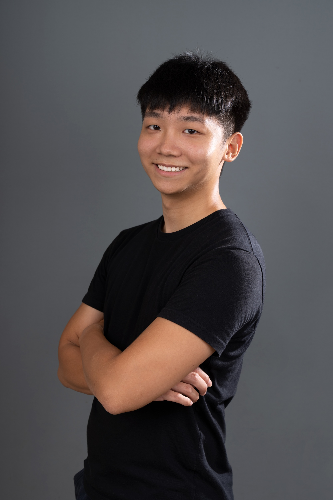
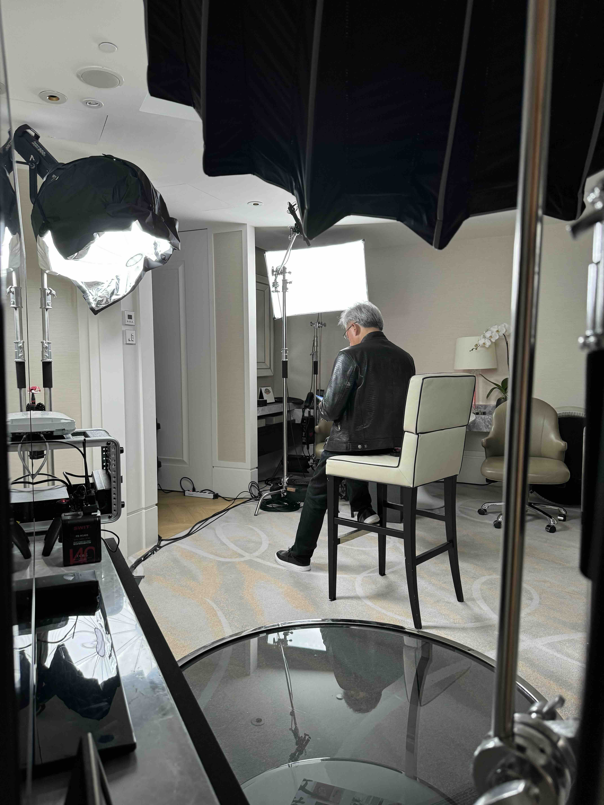
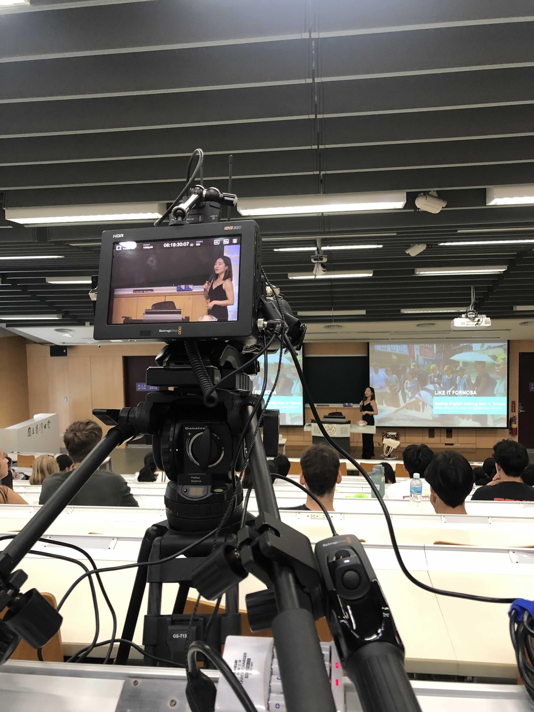

個人介紹

擁有跨國商務視野的全方位技術專家，為企業與品牌打造卓越解決方案與活動體驗。
基本資料
姓名：方譽霖 YuLin Fang
出生日期：1997 年 06 月 19 日
聯絡電話：+886-952-741-677
國際電話：+1-323-886-0619
電子郵件：kennyf5056@gmail.com
興趣：登山、野營、水上活動、自行車
特質：極強的學習能力、適應能力以及在高壓環境下擁有迅速反應
社群網站：Instagram、Facebook
學歷
| 級別 |
學校名稱 |
科系 |
起訖日期 |
| 學士（肄） |
國立臺灣大學 |
資訊管理學系 |
106/09 ~ 112/09 |
| 學士（肄） |
國立臺灣科技大學 |
電機工程系 |
104/09 ~ 105/06 |
| 高中 |
臺北市立大安高級工業職業學校 |
電機科 |
101/09 ~ 104/06 |
工作經歷
光房子創意股份有限公司 負責人兼執行總監（2021.04 ~ 至今）
- 錄影直播工程
- 曾三度為NVIDIA 黃仁勳執行長執行跨國連線直播
- 影片製作及活動紀錄
- 連續五年國立臺灣大學學務處指定影像廠商
- 至善社會福利基金會指定合作廠商
社團經歷
- 《BNI 大芯分會》 資訊長
- 《Fight Covid Taiwan》 共同創辦人
- 《臺大麥塊 MineNTU》 召集人
- 《國立臺灣大學學生會》 第32屆影像總監
講師經歷
明志科技大學學務處課外活動指導組 特約講師
國立臺灣大學《新生書院 OC12 影片部內訓》 講師
非典型管院人《嘿，同學！聽說你在...》 講者
證照
- 中華民國水上救生協會 救生員及救生教練證
- EMT-1 初級救護員證
- 丙級工業配線證
技能
代表專案分享

NVIDIA 輝達黃仁勳執行長直播工程
2024 年六月黃仁勳先生訪台期間遇全球第三大軟體公司 SAP 舉辦全球技術與創新趨勢發表會，譽霖擔任臺灣端的技術負責人，與美國直播團隊事前接洽、測試及綵排，活動現場協助 NVIDIA 以及 SAP 人員執跨國連線。
同年十二月黃仁勳先生前往亞洲訪問泰國及越南總理時又遇美國 WIRED 雜誌的年度活動 The Big Interview 以及全球半導體聯盟 GSA Awards Dinner 頒獎晚會。由於譽霖擁有豐富的商務英語能力以及六月對接美方的經驗，因此獲得客戶信任前往泰國曼谷以及越南河內協助執行兩場跨國連線直播。

國立臺灣大學 影片製作
光房子自 2021 年成立以來就與臺灣大學學務處合作，目前合作邁入第五年，為臺大學務處各單位製作包括「開學典禮」、「新生書院」、「社團聯展」等各式校級宣傳影片，並在近年協助執行各大校級活動硬體統籌、協力。
About Me
A globally-minded, multi-skilled tech innovator delivering transformative solutions and event experiences for forward-thinking brands.
Basic Information
Name: YuLin Fang He/Him
Date of Birth: June 19, 1997
Contact Phone: +886-952-741-677
International Phone: +1-323-886-0619
Email: kennyf5056@gmail.com
Interests: Hiking, Camping, Water Activities, Cycling
Attributes: Exceptional learning ability, adaptability, and quick response under pressure
Education
| Degree |
Institution |
Major |
Duration |
| Bachelor's (Incomplete) |
National Taiwan University |
Department of Information Management |
Sep. 2017 ~ Sep. 2023 |
| Bachelor's (Incomplete) |
National Taiwan University of Science and Technology |
Department of Electrical Engineering |
Sep. 2015 ~ Jun. 2016 |
| High School |
Taipei Municipal Da-An Vocational High School |
Department of Electrical Engineering |
Sep. 2012 ~ Jun. 2015 |
Work Experience
Lighthouse Creative Co., Ltd. – Founder & Executive Director (April 2021 ~ Present)
- EFP and Live Streaming
- Executed multinational live streaming for NVIDIA CEO Jensen Huang in Bangkok, Thailand and Hanoi, Vietnam
- Video Production and Event Recording
- Designated video vendor by the Office of Student Affairs, National Taiwan University for five consecutive years
- Designated partner by the Zhi-shan Foundation Taiwan
Lecturer Experience
Adjunct Lecturer for Extracurricular Activities at Ming Chi University of Technology Student Affairs Office
Lecturer for NTU Freshmen College OC12 Video Department Internal Training
Speaker at "Hey, Classmate! I Heard You Are..."
Certifications
- Lifeguard and Lifesaving Instructor Certification from the Chinese Taipei Lifesaving Association
- EMT-1 Basic Emergency Medical Technician Certification
- Class C Industrial Wiring Certification
Skills
- Language Proficiency
- Mandarin: Proficient
- English: Fluent
- Professional Skills
- Image Processing
- Live Streaming Engineering
- Audio Engineering
- Electrical Engineering
- Network Communications
- Other Academic Subjects
- Other Skills
Representative Projects
NVIDIA CEO Jensen Huang Live Streaming Project
In June 2024, during Jensen Huang’s visit to Taiwan when global software giant SAP held its Global Technology and Innovation Trends Conference, YuLin served as the technical lead on the Taiwan side—coordinating with the U.S. live streaming team for pre-meetings, tests, and rehearsals, and assisting NVIDIA and SAP personnel with multinational live connectivity.
In December of the same year, as Jensen Huang visited Asia and met with the prime ministers of Thailand and Vietnam, he also participated in WIRED magazine’s annual event “The Big Interview” and the Global Semiconductor Alliance’s GSA Awards Dinner. Owing to YuLin’s rich business English skills and his June experience liaising with the U.S. team, he was entrusted to assist in executing two multinational live streams in Bangkok, Thailand and Hanoi, Vietnam.
NTU Video Production
Since its establishment in 2021, Lighthouse Creative has collaborated with the Office of Student Affairs at National Taiwan University. Now in its fifth year of partnership, the company has produced a variety of campus promotional videos for NTU—including “Opening Ceremony”, “Freshmen College”, and “Club Exhibitions”—and in recent years has assisted in hardware coordination for major campus events.